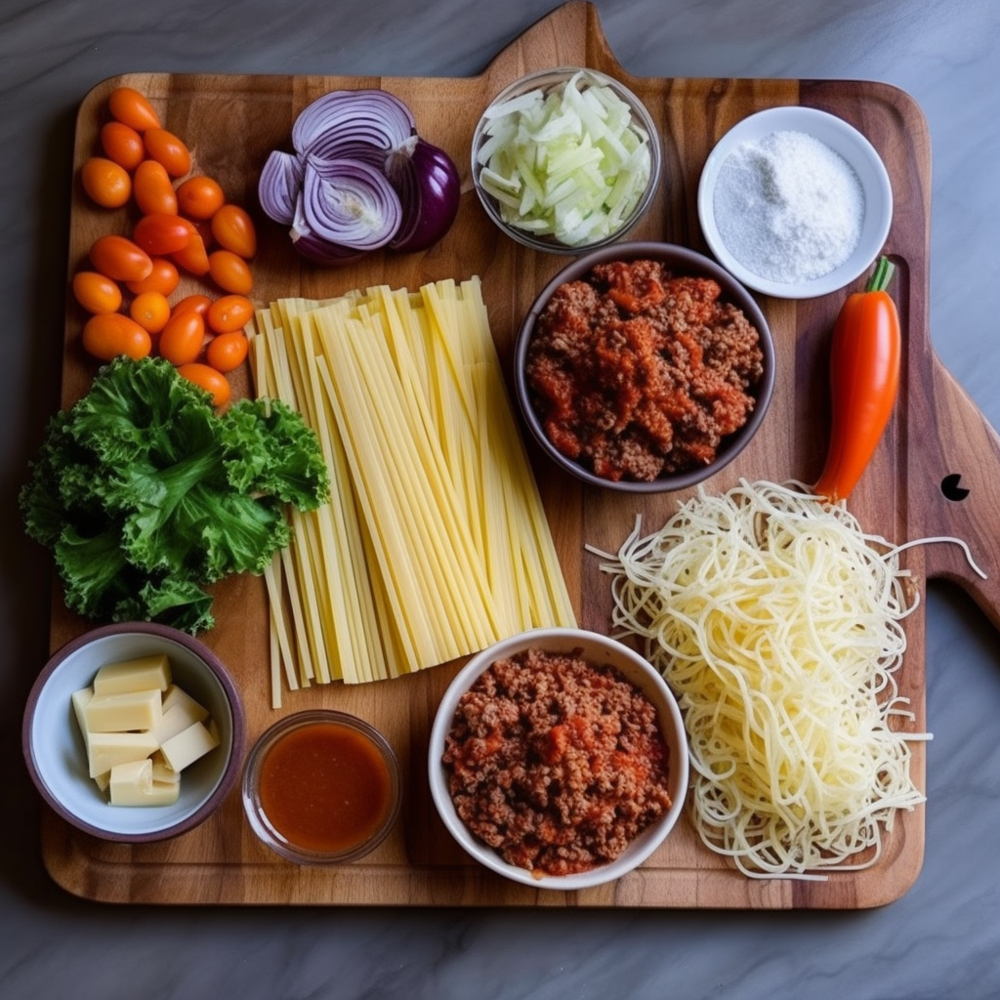
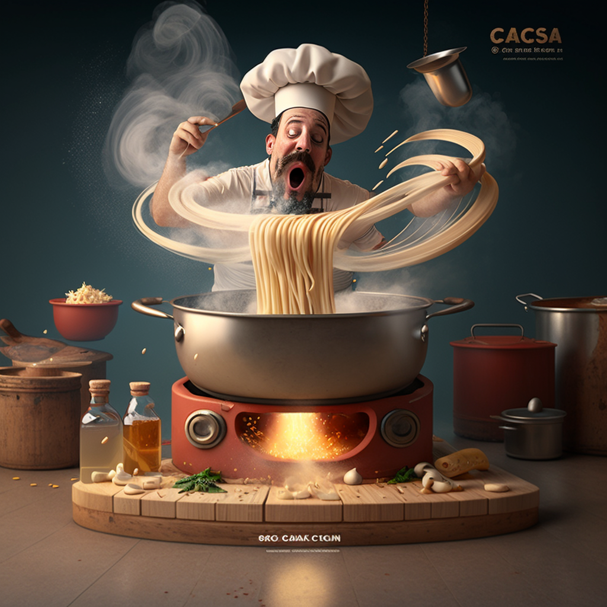
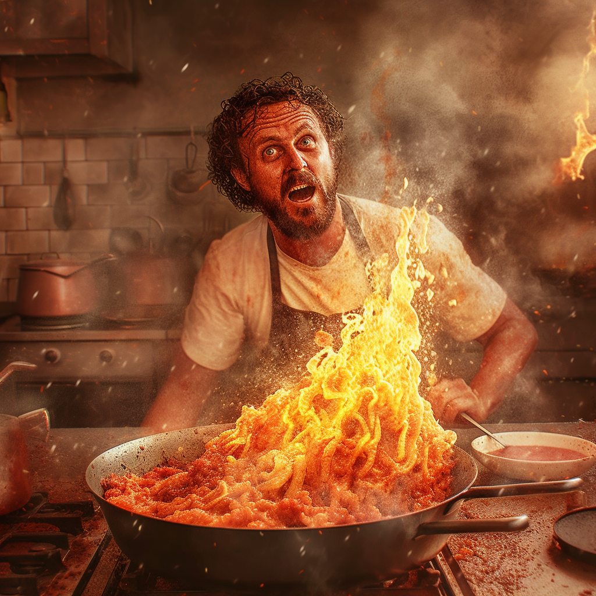

Spaghetti Bolognese
Spaghetti Bolognese is a classic Italian dish that consists of spaghetti pasta, tomato-based sauce,
and ground meat, typically beef or pork.
sauce is often made with a combination of onions, garlic, canned tomatoes, tomato paste,
herbs such as basil and oregano, and sometimes red wine.
bolognese is a hearty and satisfying meal that is popular around the world.
It is often considered a comfort food and is a favorite in many households.
Ingredients
- 1 stock cube
- 3 carrots – grated
- 2 celery sticks – roughly chopped
- 1 tbsp dried oregano
- 1 garlic clove – crushed
- 1 onion or 1 leek – sliced
- 1 red or yellow pepper – roughly chopped
- 400g tin of chopped tomatoes
- 2 tablespoons tomato paste
- 400g minced beef
- Olive oil
- Salt & pepper
Description
- Step 1
Put a large saucepan on a medium heat and add 1 tbsp olive oil
- Step 2
Add 4 finely chopped bacon rashers and fry for 10 mins until golden and crisp.
- Step 3
Reduce the heat and add the 2 onions, 2 carrots, 2 celery sticks, 2 garlic cloves and the leaves from 2-3 sprigs rosemary,
all finely chopped, then fry for 10 mins. Stir the veg often until it softens.
- Step 4
Increase the heat to medium-high, add 500g beef mince and cook stirring for 3-4 mins until the meat is browned all over.
- Step 5
Add 2 tins plum tomatoes, the finely chopped leaves from ¾ small pack basil, 1 tsp dried oregano, 2 bay leaves,
2 tbsp tomato purée, 1 beef stock cube, 1 deseeded and finely chopped red chilli (if using),
125ml red wine and 6 halved cherry tomatoes. Stir with a wooden spoon, breaking up the plum tomatoes.
- Step 6
Bring to the boil, reduce to a gentle simmer and cover with a lid. Cook for 1 hr 15 mins stirring occasionally,
until you have a rich, thick sauce.
- Step 7
Add the 75g grated parmesan, check the seasoning and stir.
- Step 8
When the bolognese is nearly finished, cook 400g spaghetti following the pack instructions.
- Step 9
Drain the spaghetti and either stir into the bolognese sauce, or serve the sauce on top.
Serve with more grated parmesan, the remaining basil leaves and crusty bread, if you like.